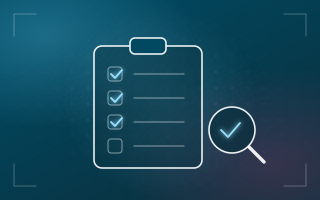

Recursos Humanos · Guía de compra
Cómo elegir un software de nómina en Ecuador: 8 preguntas para el proveedor

Cambiar de sistema de nómina no pasa todos los años, así que vale la pena elegir bien. Lleva estas preguntas a la próxima demo.
Las 8 preguntas
- ¿Genera solo los archivos del IESS, el SRI y el Ministerio del Trabajo? Avisos de entrada y salida, RDEP, formulario 107. Si con cada cambio de ley hay que esperar meses una actualización, el riesgo lo corre tu empresa.
- ¿Cuánto se demora en calcular el rol? Con una nómina grande se nota. Un sistema ágil procesa 100 empleados en segundos; algunos sistemas antiguos se toman 30 o 45 minutos.
- ¿Puedo crear mis propios rubros y fórmulas? Cada empresa tiene bonos y descuentos propios. Si para cada uno dependes del proveedor, te toca esperar.
- ¿Toma las horas directo de los lectores biométricos? Si tu nómina depende de horas extra o turnos, nadie debería pasar marcaciones a mano cada quincena. Mira cómo funciona el control de asistencia.
- ¿Saca también décimos, liquidaciones y archivos para el banco? El rol de pagos es solo una parte. Lo ideal es que todo salga del mismo sistema.
- ¿Maneja varias empresas y sucursales? Si tienes o vas a tener más de una razón social, confirma que lo maneje desde el inicio, con permisos por empresa, sucursal y usuario.
- ¿Qué tan rápido actualizan cuando cambia la ley? Pregunta también qué soporte te dan en un cierre de mes complicado.
- ¿Mi equipo lo puede aprender rápido? El mejor motor de cálculo no sirve si tu gente tarda semanas en usarlo. Filtros tipo Excel y búsquedas simples ayudan mucho.
¿Quieres ver cómo responde SquareNet a estas 8 preguntas?
Agenda una demo y pregúntanos lo que quieras.